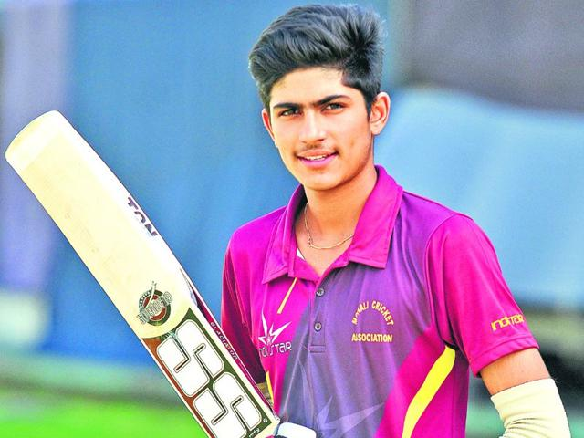
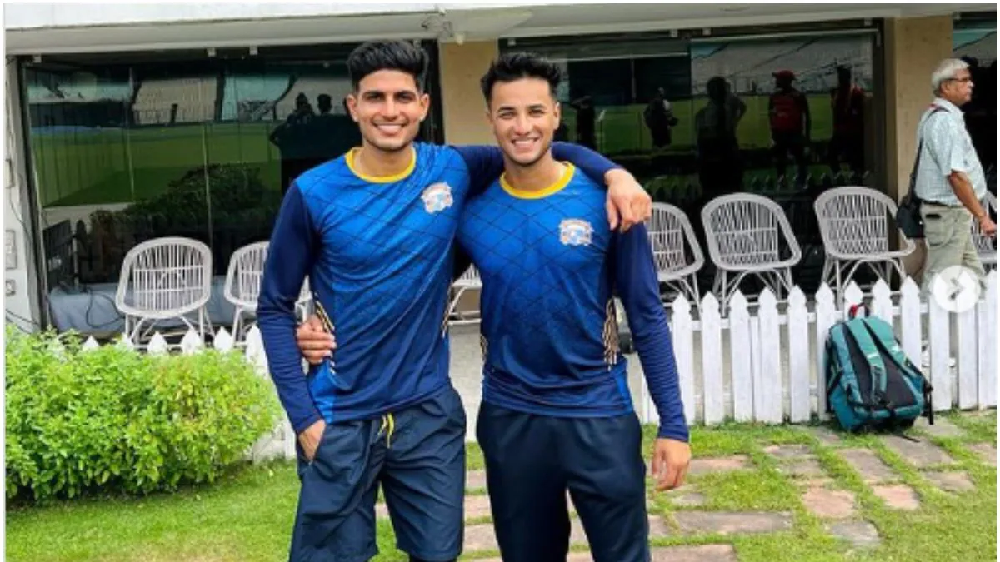
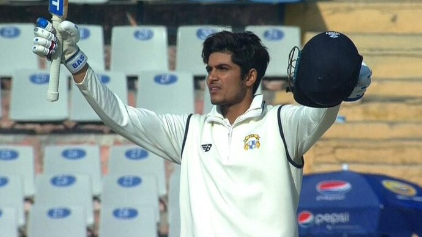
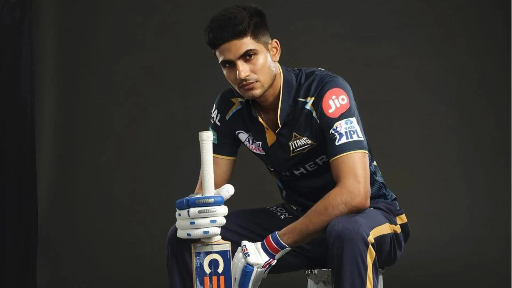

Shubman Gill History
🏏 Early Life and Family Background
.jpg)
Shubman Gill was born on September 8, 1999, in Chak Jaimal Singh Wala, a village in the Fazilka district of Punjab, India. Hailing from a farming family, his father, Lakhwinder Singh, had aspirations of becoming a cricketer but had to abandon them due to financial constraints. Recognizing his son's talent, Lakhwinder decided to train Shubman himself, bowling 500 to 700 balls daily. In 2007, to provide better training opportunities, the family moved to Mohali, near the Punjab Cricket Association Stadium.
🏏 Schooling and Early Cricketing Days

Shubman attended school in Mohali, where he balanced his academic pursuits with his passion for cricket. At the age of 12, his performance caught the attention of former Indian bowler Karsan Ghavri, who recommended that Shubman attend the Under-19 all-India pace bowlers' camp. Facing U-19 bowlers in the nets, Ghavri requested the Punjab Cricket Association (PCA) to include him in Punjab's U-14 team. He formed a strong partnership with Abhishek Sharma, with whom he opened the innings for Punjab in the under-14s.
🏏 U-13 and U-16 Cricket

Shubman's cricketing journey began at the age of three when he first picked up a bat. He made significant strides in his youth cricket career, notably scoring a double century on his Under-16 debut for Punjab in the Vijay Merchant Trophy. In an Inter-District Under-16 match against Amritsar, representing Mohali, he scored 351 runs and shared a record opening stand of 587 runs with Nirmal Singh. This remarkable feat showcased his prodigious talent and set the stage for his future successes.
🏏 Ranji Trophy and Domestic Career

Shubman made his Ranji Trophy debut for Punjab in the 2017–18 season. In December 2017, he was named vice-captain of India's squad for the 2018 Under-19 Cricket World Cup. In the semifinal against Pakistan U-19, he scored 102* runs off 94 balls, earning him the title of Player of the Match. India defeated Australia U-19 in the final, securing their fourth title. He had a successful tournament, leading the team in runs scored with 372 runs and was also named the player of the tournament.
🏏 U-19 World Cup and Rise to Prominence
.jpg)
In December 2016, Shubman was part of the Indian U-19 team for the 2016 ACC Under-19 Asia Cup, where he emerged as the second-highest run-scorer of the tournament, behind teammate Himanshu Rana. India won the tournament by defeating Sri Lanka U-19 in the final, with Shubman scoring 70 runs off 92 balls. In February 2017, he played a key role in the team's series win against England U-19. Following India's matches in the tournament, the International Cricket Council (ICC) named Shubman as the rising star of the squad.
🏏 Kolkata Knight Riders (2018–2021)

In January 2018, Shubman was bought by the Kolkata Knight Riders for ₹1.8 crore in the 2018 IPL auction. He made his Twenty20 debut for KKR in the 2018 Indian Premier League on April 14, 2018. Shubman scored 203 runs in the 2018 season as KKR finished third, losing in Qualifier 2 against Sunrisers Hyderabad. In March 2019, he was named as one of eight players to watch by the International Cricket Council (ICC) ahead of the 2019 Indian Premier League tournament. Shubman scored 296 runs in the 2019 season as KKR finished fifth. He also won the Emerging Player of the tournament award in the 2019 Indian Premier League. In 2020, Shubman scored 440 runs, making him the highest-scoring player for KKR that season. The team would, however, finish fifth once again. During the 2021 edition of the IPL, Shubman scored 478, being KKR's highest scorer once again. KKR reached the final where Shubman would score a half-century; however, the team would ultimately lose to CSK, coming second.
🏏 Gujarat Titans (2022–Present)

Ahead of the 2022 IPL auction, Shubman was drafted by the newly formed Gujarat Titans franchise for ₹8 crore. He scored 483 runs in 2022, and the Titans defeated Rajasthan Royals to win the 2022 IPL in their inaugural year. In the 2023 season, Shubman scored 890 runs, becoming the second-highest run-scorer ever in a single IPL season and winning the Orange Cap. Shubman became the fourth man to score back-to-back centuries, 101 against the SRH and 104* against RCB. In Qualifier 2 versus MI, Shubman achieved the season's highest individual score of 129 off 60 balls and the record of the highest-ever score in an IPL playoffs match and the second-most centuries in an IPL season at 3. While Shubman played in his third consecutive final, the Titans lost to the Chennai Super Kings.
🏏 Stats
| Format | Matches | Runs | Average | Highest Score | SR |
| Test | 32 | 1893 | 35.06 | 128 | 59.93 |
| ODI | 55 | 2775 | 59.04 | 208 | 99.57 |
| T20I | 21 | 578 | 30.42 | 126 | 139.28 |
| IPL | 114 | 3724 | 39.2 | 129 | 137.78 |